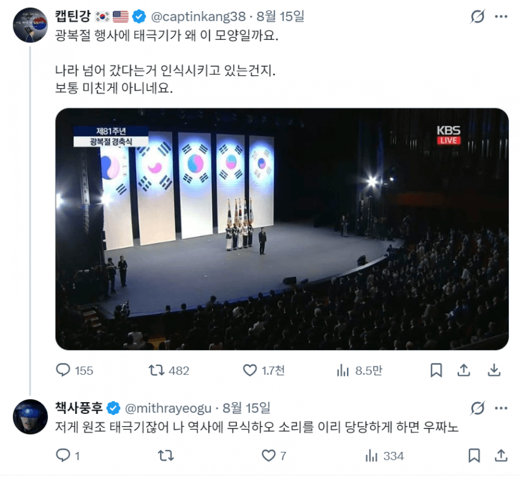
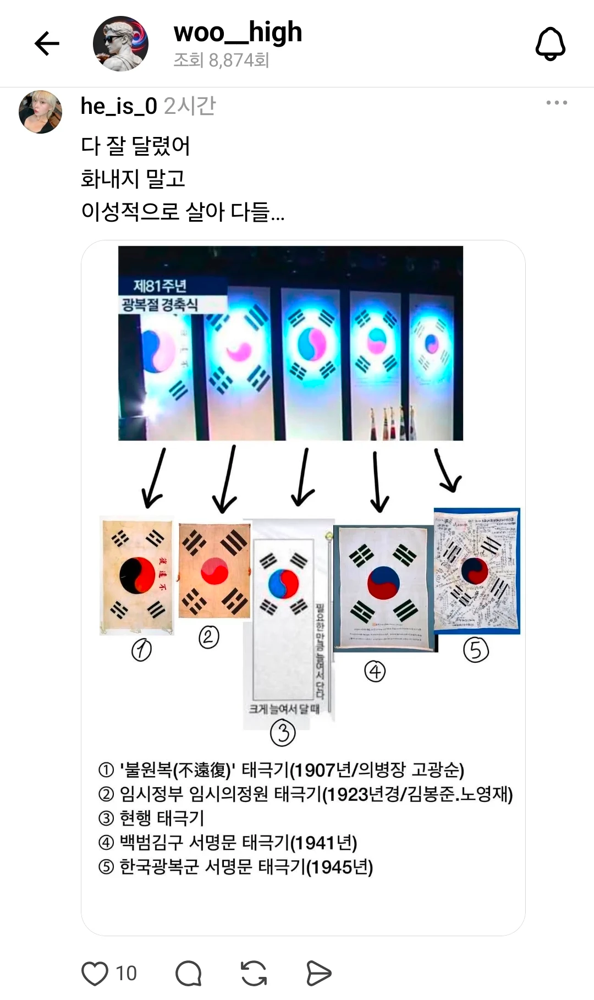
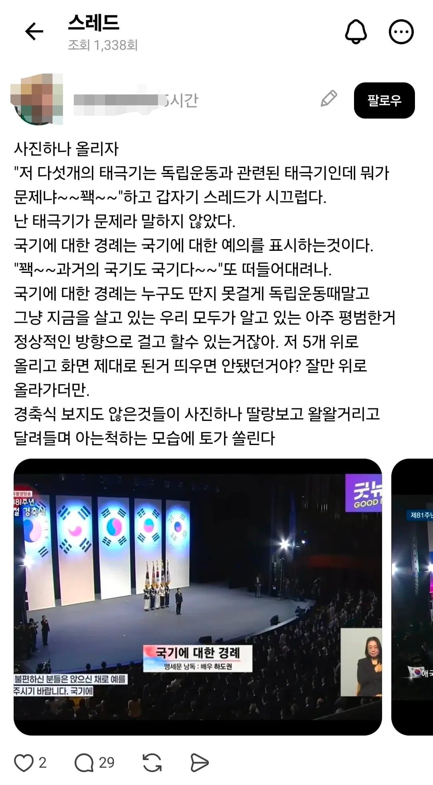
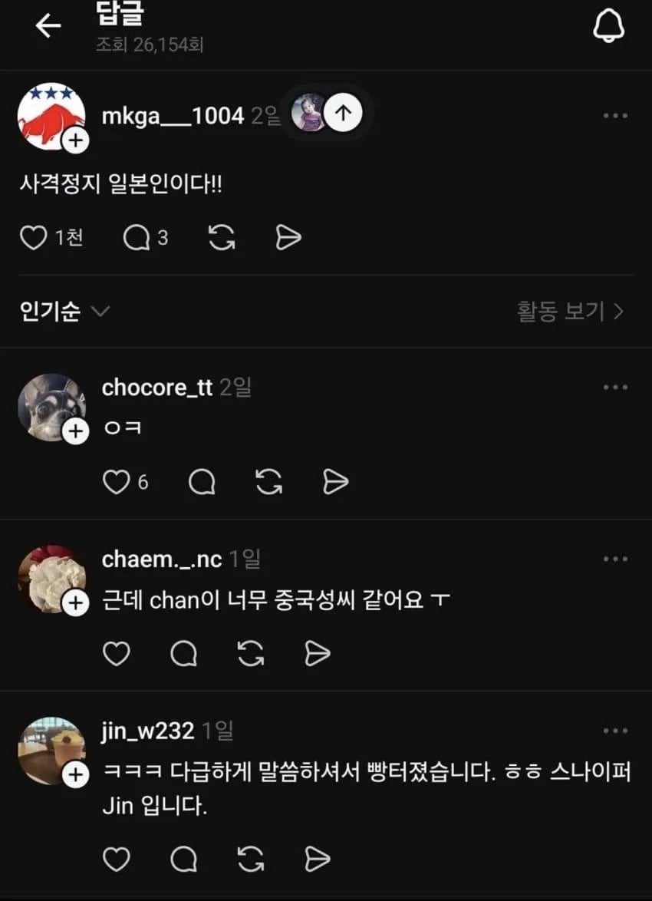
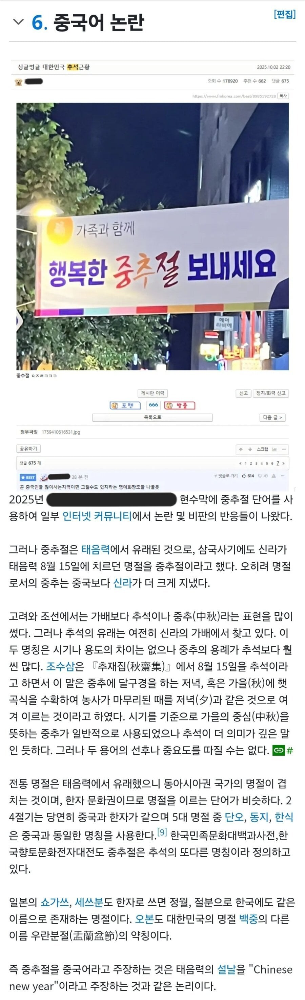

사이버 애국자계층
책사풍후도 기겁한다


사람들이 지적해줘도 왜 오해하게 만들었냐 그러니 내 잘못이 아니다 라고 함

일본인에게
한자쓰면 중국인이라고하거나

옛날에 잘 쓰였던 명칭도 지가 모르니 중국어라며 논란만들고
중국싫어한다고 주장하지만
하는짓거리는 무식하고 패악질부리는것밖에없어서
중국 홍위병이랑 다를게없음

사이버 애국자계층
책사풍후도 기겁한다


사람들이 지적해줘도 왜 오해하게 만들었냐 그러니 내 잘못이 아니다 라고 함

일본인에게
한자쓰면 중국인이라고하거나

옛날에 잘 쓰였던 명칭도 지가 모르니 중국어라며 논란만들고
중국싫어한다고 주장하지만
하는짓거리는 무식하고 패악질부리는것밖에없어서
중국 홍위병이랑 다를게없음
댓글
수집 당시 댓글 2개
시라누이Q · 3 일 전
카린토 · 3 일 전
일뽕보다 더한 무지성반중